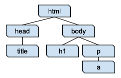
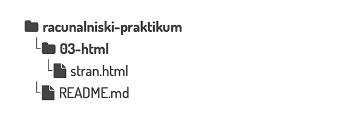

HTML (angl. HyperText Markup Language**, jezik za označevanje hiperteksta oz. nadbesedila),
je osnovni jezik za ustvarjanje spletnih strani in spletnih aplikacij.
Spletnim brskalnikom, kot so Google Chrome, Firefox, Edge ali Safari, pove, kako naj prikažejo vsebino spletne strani.
To naredi z označevanjem gradnikov, kot so naslovi, odstavki, slike, povezave, tabele in obrazci.
Vsaka oznaka (značka, angl. tag) označuje določen del vsebine.
Ko brskalnik prejme HTML dokument, prebere oznake in prikaže vsebino na zaslonu.
V ozadju te oznake pomagajo brskalniku razumeti, kaj naj prikaže in kako naj to prikaže.
Na koncu 2.-4. naloge zabeležite spremembe.
Če naloge slučajno ne končate na vajah, vseeno zabeležite spremembe -
v sporočilo napišite na primer Vdelu:... s kratkim opisom narejenega.
Preden odidete iz predavalnice,
pošljite spremembe na strežnik s paleto ukazov:
Ctrl+Shift+P (🍎 Cmd+Shift+P) >
Git: Push.
HTML dokument je sestavljen iz vsebine in značk. Značke imajo lahko lastnosti oz. atribute.
Prepoznamo jih po oklepajih < in >, npr. <h1> ali <img>.
Značke bomo vedno najprej odprli (<znacka>) in nato zaprli (</znacka>).
Pri nekaterih značkah bomo uporabili tudi atribute.
Primer značke z atributom je značka za povezavo <a> (angl. anchor).
V atribut href napišemo spletni naslov, na katerega kaže povezava, vsebina značke pa je besedilo povezave,
ki se bo prikazalo v brskalniku.
Značke lahko gnezdimo eno v drugo: <ahref="http://fmf.uni-lj.si/"><em>FMF</em></a>.
Značke se ne smejo prekrivati.
Če pogledamo dve znački, je bodisi ena v vsebini druge bodisi se sploh ne prekrivata.
Narobe je npr. <ahref="http://fmf.uni-lj.si/"><em>FMF</a></em>.
Predstavljate si lahko, da so značke škatle, ki držijo vsebino.
<!DOCTYPE html><html><head><title>Enostavna spletna stran</title></head><body><!-- V naslednjih dveh vrsticah je vsebina (telo) spletne strani --><h1>Jaz sem naslov!</h1><p>V odstavkih imamo lahko tudi <ahref="https://www.fmf.uni-lj.si/">povezave</a></p></body></html>
Včasih si je dobro predstavljati tak dokument kot hierarhijo značk:

Fig. 8 Hierarhija značk za zgornji primer dokumenta#
Spletni brskalniki imajo ponavadi vgrajena orodja, ki omogočajo razvijalcem in oblikovalcem pregledovanje,
urejanje in razhroščevanje spletnih strani in aplikacij neposredno znotraj brskalnika.
Ta orodja vključujejo funkcionalnosti za pregledovanje in urejanje HTML in CSS kode,
izvajanje in razhroščevanje JavaScript kode, spremljanje omrežnih zahtevkov, analiziranje zmogljivosti strani,
pregledovanje uporabe pomnilnika, itd.
Ko v brskalniku obiščete spletno stran, se na vaš računalnik naloži kopica datotek, ki jih brskalnik uporabi,
da vam prikaže vsebino spletne strani.
Sledite naslednjim korakom, da boste dobili boljšo predstavo o tem, kaj pomeni brskanje po spletu.
Odprite okno brskalnika.
V razdelku za brskalnik, ki ste ga odprli, sledite navodilom za orodja za razvijalce (več o tem spodaj).
Poiščite in odprite zavihek Network.
V naslovni vrstici brskalnika vpišite naslov https://www.fmf.uni-lj.si/ in stisnite vnašalko ↵.
Poglejte, kaj vse se je preneslo na računalnik, da se je prikazala prva stran FMF.
Preklopite na zavihek z izvorno kodo (spodaj za posamezni brskalnik)
in si oglejte, kako izgleda izvorna koda strani.
Orodja za razvijalce:
Chrome: odprite stranski meni in izberite More tools > Developer Tools,
Firefox: odprite stranski meni in izberite More tools > Web Developer Tools,
Safari: odprite meni Develop in izberite Show Web Inspector. Če menija Develop ne vidite, sledite navodilom.
Alternativno lahko Orodja za razvijalce neposredno odprete s pritiskom na tipko F12 ali pa z uporabo bližnjice Ctrl+Shift+I (🍎 Cmd+Option+I).
Zavihek za izvorno kodo strani:
Chrome in Safari: izvorna koda je v zavihku Elements,
Firefox: izvorna koda je v zavihku Inspector.
2. naloga: delo s HTML dokumentom, glava dokumenta#
V tej nalogi boste spoznali osnovno ogrodje HTML dokumenta in kako za urejanje lahko uporabimo VSCode.
HTML značke lahko pišemo bodisi z velikimi ali malimi črkami.
Običajno pišemo vse z malo, razen značke DOCTYPE.
Tudi mi se bomo držali tega dogovora.
Če ste sledili domači nalogi in vajam, imate dva repozitorija:
tistega iz domače naloge, ki ste ga večinoma poimenovali racunalniski-praktikum,
ter kopijo repozitorija git-zgodba, ki ste ga uporabili na prejšnjih vajah.
Prvega bomo še naprej uporabljali na vajah.
V VSCode odprite imenik s svojim repozitorijem (verjetno ste mu dali ime racunalniski-praktikum).
V njem naredite nov imenik 03-html, v njem pa novo datoteko stran.html in jo odprite.
V urejevalniku odprite okno Problems.
Spodaj levo lahko kliknete na ikoni s križcem v krogu in klicajem v trikotniku,
ali pa ga poiščete v meniju View.
Če postavite kurzor v datoteko stran.html, se bo v zavihku PROBLEMS pojavilo opozorilo:
Doctypemustbedeclaredfirst.(doctype-first)[1,1].
Enici v oglatih oklepajih nam povesta, da je težava v prvi vrstici (in prvem stolpcu).

Fig. 9 Struktura repozitorija racunalniski-praktikum po tej točki.#
Težavo odpravimo tako, da napišemo značko DOCTYPE.
Ta brskalniku pove, za kakšno vrsto dokumenta gre.
Napišite < in počakajte, da se vam v priročnem meniju pokaže možnost DOCTYPE.
Morda boste morali dopisati še klicaj: <!. Stisnite vnašalko ↵.
Zdaj bi moralo v prvi vrstici pisati <!DOCTYPEhtml>.
Če ne, lahko značko tudi prekopirate od tu.
Značka DOCTYPE ne potrebuje zaključne značke.
V novo vrstico (zaradi preglednosti) za značko DOCTYPE napišite značko html:
Kot prej, lahko napišete < in iz priročnega menija izberete html, lahko pa samo napišete <html.
Zaključno značko vam bo urejevalnik dopisal sam,
ko boste značko napisali do konca z znakom >: <html>.
V drugi vrstici bi zdaj moralo pisati <html></html>, kurzor pa bi moral stati med ><.
Stisnite vnašalko ↵ za novo vrstico.
V značko html dodajte eno za drugo še znački head in body.
Zamaknjeni naj bosta za dva presledka (tudi to delamo zaradi preglednosti).
Na splošno naj bodo gnezdene značke vedno zamaknjene za dva presledka glede na višji nivo.
V zavihku Problems bi se moralo pojaviti novo opozorilo.
Odpravite ga, pa tudi tisto opozorilo, ki se pojavi takoj za tem.
Na spletni strani za HTML standard lahko preverite,
kako se vaša izvorna koda obnese pri bolj strogem preverjanju.
Koda za slovenski jezik je sl, za angleški pa en.
Značka html z atributom za jezik pa izgleda takole: <htmllang="en">.
Značka title določi naslov dokumenta, kot se prikaže v naslovni vrstici brskalnika.
Naslov dokumenta naj bo “ISO 3103”.
V glavo dokumenta dodajte spodnjo značko, da določite kodiranje dokumenta
<metacharset="UTF-8">. Te značke ni treba zaključiti.
Če je ne boste dodali, se vam bo znak ± prikazoval takole nekako: ±.
Počistite vse napake in opozorila, preden nadaljujete z naslednjo nalogo.
Če ne veste kako, se obrnite na asistentko ali asistenta.
Zabeležite spremembo:
V opravilnem stolpcu poiščite ikono za Git (če se zapeljete nanjo z miško, bo pisalo Source Control)
in jo kliknite, da dobite stranski meni za nadzor nad verzijami.
Pod napisom Changes bi morala biti našteta datoteka stran.html.
Če se nad vrstico z imenom datoteke zapeljete z miško, boste na desni strani videli ikone za opravila.
Kliknite na + (Stage Changes, ki izvede ukaz add).
Datoteka se bi morala premakniti pod napis Staged Changes.
Kadar zabeležite spremembo (naredite commit),
se v repozitorij shranijo natanko spremembe, ki so naštete pod tem napisom.
Da naredite commit, napišite sporočilo v vnosno polje nad gumbom Commit,
v katerem v nekaj besedah opišete, kaj ste naredili, npr. PripravistrukturoHTMLdokumenta.
Za reševanje skupaj: na tablo narišite drevesno strukturo značk.
Datoteko, ki jo boste pripravili, boste potrebovali za domačo nalogo.
Pri pisanju HTML značk vam bo v pomoč ukaz Wrap with Abbreviation
iz palete ukazov (angl. Command Palette) v urejevalniku,
več o njem pa si preberite v plonkcu za paleto ukazov.
Datoteko odprite v brskalniku, da vidite, kako izgleda.
V urejevalniku v značko body prilepite vsebino datoteke vsebina.txt.
Odstavki so ločeni s praznimi vrsticami.
Datoteko shranite. Z bližnjico Alt+Tab (🍎 Cmd+Tab) skočite nazaj v brskalnik,
kjer pritisnite Ctrl+R (🍎 Cmd+R), da osvežite stran.
Na začetku besedila, ki ste ga ravnokar prilepili, označite naslov “ISO 3103”.
Stisnite tipke Ctrl/Cmd+Shift+P, da pridete v pogovorno okno palete ukazov.
Začnite tipkati ime ukaza Wrap with Abbreviationwrap...,
ter ga izberite z vnašalko ↵, ko se pojavi na vrhu seznama.
Naslednjič, ko boste hoteli uporabiti ta ukaz, se bo na vrhu seznama pojavil že
po manjšem številu natipkanih znakov.
Pojavi se še eno pogovorno okno, v katerega napišite ime značke za naslov (h1),
ter stisnite vnašalko ↵.
V vrstici, kjer je bil prej samo označeni naslov, bi moralo zdaj pisati
<h1>ISO3103</h1>.
Z ustreznimi značkami označite še podnaslove (h2)
“Details”, “Pot and bowl”, “Criticism” in “Competing standards”.
in podpodnaslov (h3) “Contents” na začetku besedila.
Namig:Alt/Option + levi klik
Pod podpodnaslovom “Contents” so našteta podpoglavja. Oblikovali bomo preprost seznam vsebine.
Najprej bomo s pomočjo večih kurzorjev vsako vrstico s podpoglavjem obdali z značko.
Postavite kurzor na začetek vsake vrstice (Ctrl+Alt+↑↓ oz. Cmd+Option+↑↓),
stisnite in držite tipko Shift (za označevanje), nato pa še End oz. Cmd+→ (za skok na konec vrstice).
Zdaj bi morali imeti označene vse vrstice kazala vsebine, vsako vrstico s svojim kurzorjem.
Na vseh naenkrat zdaj lahko uporabite ukaz Wrap with Abbreviation z značko li (angl. list item).
Končno izberite vse vrstice (tokrat z enim kurzorjem) in jih obdajte z značko ol (angl. ordered list).
Wrap with Abbreviation naredi toliko značk, kot imate kurzorjev, za vsakega eno.
Preverite, če ste osvojili tehniko iz prejšnje točke.
Pod podnaslovom “Details” naj bodo vsi odstavki razen prvega
elementi (značka li) neurejenega seznama (angl. unordered list, značka ul).
Odstavki so ločeni s praznimi vrsticami, v katerih nočemo narediti elementov seznama,
zato kurzorje postavite s klikanjem.
Bodite pozorni na to, da sta dva elementa seznama zapisana v večih vrsticah (tista dva, ki imata tabeli).
Citat (odstavek pod besedilom “The abstract states the following:”)
označimo z značko blockquote.
Vsi ostali odstavki so običajni. Take označimo z značko p.
V prvem odstavku naj bo “ISO 3103” povezava na Wikipedijo.
To naredite z značko a in atributom href, katerega vrednost naj bo naslov strani.
V 2. in 8. elementu v razdelku “Details” sta tabeli s po tremi stolpci, tremi vrsticami.
Tabelo v HTML naredimo z značko table, v kateri so značke tr za vrstice tabele.
V vsaki vrstici naštejemo celice z značkami td, celice za glavo tabele pa s th.
Celice za glavo uporabite v prvi vrstici in v prvem stolpcu.
Prenesite in vstavite sliko z značko img, ki je ni treba zaključiti.
Podate ji atribut src, v katerem podate pot do slike in atribut alt, v katerem podate opis.
Ta opis se uporabi v primerih, ko se slika ne prikaže, in za dostopnost
(npr. za avtomatsko branje vsebine).
Preverite v brskalniku, če se slika prikaže.
Verjetno bo prevelika, tako da jo za zdaj zakomentirajte:
v paleti ukazov poiščete comment in izberete Add Line Comment.,
,
Počistite vse napake in opozorila, preden nadaljujete z naslednjo nalogo.
Zabeležite spremembo: dodajte datoteki stran.html in tea-bowl.jpg
ter napišite uporabno sporočilo, npr. DodajvsebinoHTMLdokumenta.
V drugem odstavku poudarite začetek “ISO 3103” z značko strong.
Besedilo “brewing tea” označite z značko em.
V starih časih se je pogosto uporabljalo znački b (angl. bold)
in i (angl. italic).
Zdaj se v dobri praksi ločuje pomen (predstavljen s HTML značkami)
in oblikovanje (CSS, ki ga bomo srečali na naslednjih vajah).
Dodali bomo MathJax za lepe matematične formule z LaTeX-om.
Sledite navodilom Getting Started (za verzijo MathJax 4).
Košček kode, ki bo vaši strani dodal skripto MathJax, dodate v glavo dokumenta.
Spletni strani dodajte formulo, npr. \[x=\frac{-b\pm\sqrt{b^2-4ac}}{2a}\].
Za zdaj še ni treba, da razumete, kako formule delujejo.
V zavihku Network poglejte, kaj se zgodi, ko osvežite stran.
Formula, ki ste jo ravnokar napisali, je zapisana v posebni sintaksi
oz. kontroliranem jeziku, ki omogoča računalniku, da vsaj do neke mere razume, kaj želimo narediti.
Poskusite razbrati, kako deluje sintaksa matematičnega izraza zgoraj.
Najdete ukaze in parametre ter kako so označeni?
Pomagajte si s formulo zgoraj, da napišete enačbo \(e^{i\pi} + 1 = 0\)
(poskusite uganiti, kako bi napisali črko \(\pi\)).
Sklicevanje znotraj dokumenta naredimo z značkami a, kjer želimo, da je povezava,
in atributi id, kamor želimo, da povezava kaže.
Če naslovu “Criticism” dodamo atribut id z vrednostjo criticism takole:
<h2id="criticism">Criticism</h2>, nas bo povezava <ahref="#criticism">Criticism</a>
pod podnaslovom “Contents” peljala do naslova.
Popravite elemente seznama pod “Contents” tako, da bodo delujoče povezave na ustrezne
dele strani.
Zabeležite spremembo: dodajte datoteko stran.html
ter napišite uporabno sporočilo, npr. Dodajformuleinsklicevanje.
{kind=link}